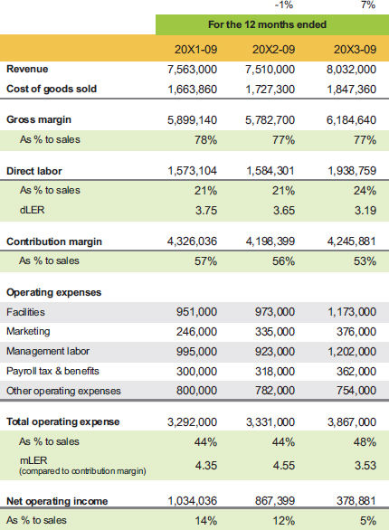

Launch capital for expansion: Rolling 12 performance

As we reviewed their performance over the past three years, we could see that revenue increased in the current year (it was flat the previous year), and profit steadily declined to less than half of what it had been. The revenue increase in 20X3 was largely due to price increases we pushed for due to rising costs. Just a 1% decrease in gross margin impacted the bottom line in 20X2 since total operating expenses did not move. The market does not always give you room for a price increase, but when this company increased its prices, their customers did not notice too much.
The company was in the later stages of expanding their capacity, so we needed to dig deeper to create a picture of how the existing business was performing and also identify all the launch capital spending that was already seeping into their current operating data. We also needed to identify the annual effect of the price changes, since they had been in effect for only three months. You can see the benefit of rolling 3 data in table 6.6.